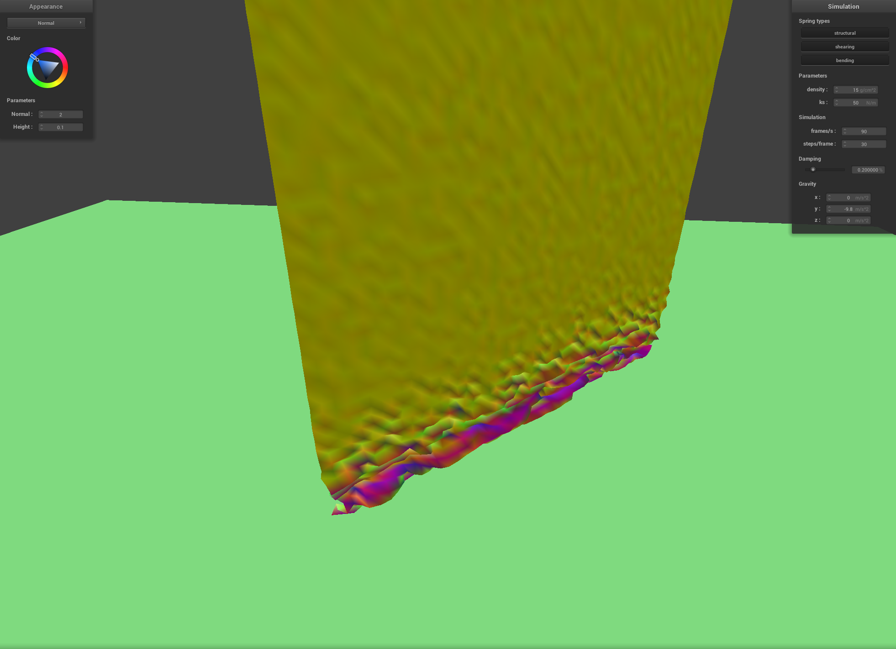
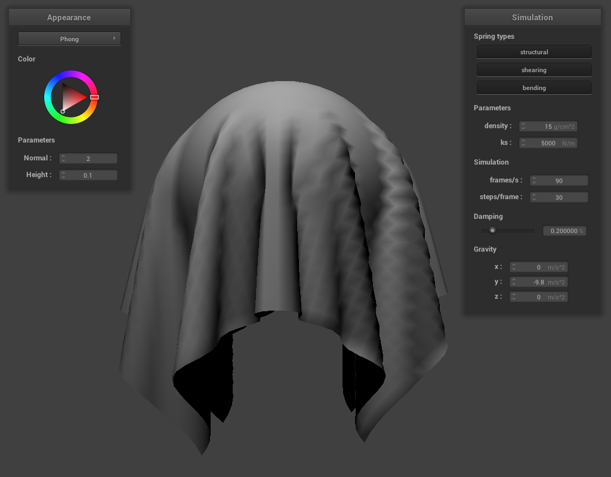

CS184/284A Spring 2025 Homework 4 Write-Up
Names:
Link to webpage: https://cal-cs184-student.github.io/hw-webpages-z_hello_world/hw4/index.html
Link to GitHub repository: https://github.com/cal-cs184-student/sp25-hw4-physics_is_fun
Overview
In this homework, I implemented a cloth simulation with self collisions and materials for rendering it nicely. The cloth is able to collide with infinite planes and spheres. I've never done physical simulation like this, and I learned a lot about how this type of thing is implemented. I previously always assumed physical simulation just discretely accumulated position according to velocity and velocity according to acceleration, but now know that there are much better and more stable methods.Part 1: Masses and springs
To build the cloth, I start by placing the masses in a grid pattern. To make the cloth a consistent size, for each axis, I multiply the axis coordinate by the size and divide by the number of massses along that axis.To make the springs, I start by adding just adjacent springs in the grid. This forms the structural constraints.
Then I add springs along the diagonals to constrain sheer.
Finally, I add springs between the first and last point mass for every axis-aligned adjacent trio of masses. This forms the bending constraints.
The following images show the spring constraints using white lines. The structural and bending constraints are aligned, so the difference is not visible. The shear constraints go along every adjacent diagonal.
|
|
|
|
|
|

|

|
Part 2: Simulation via numerical integration
-
To implement the basic cloth simulation, I start by iterating through every point mass. For each mass, I set the force to the mass times gravity.
Then I iterate through every spring and calculate the force pulling the masses together. I add the force to each mass (pointing to the other).
Now that the forces are calculated, I perform Verlet integration on each point mass. This uses the difference in positions to find the velocity. The force and mass are used to find acceleration. Then the new position is calculated in terms of the time step. (the velocity found already includes this, so it doesn't get scaled)
The old position is stored for later use (collisions, velocity in next time step).
Next I constrain the springs as follows:
When one spring is fixed, I update the position of the other to be within 10% of the resting length and still have the same direction between them.
When neither spring is fixed, I find the center point between them and update them to each be half of the max strech length from the center.Plot Showing the Local Constraint Update (for neither fixed)
(link to interactive plot)
-
Results:
The spring constant seemed to change the stiffness of the cloth. It tended to resist bending more.
The cloth looks thinner and falls in a more fluid way when the spring constant is small. When the spring constant is large, the fabric looks thicker and more rigid. As it falls, it does not bend as much as with lower \(k_s\).
The following images show that the spring constant has the inverse effect as the density:
This makes sense because the final acceleration ends up being calculated as being \(x+g\) where \(x\) is proportional to \(\frac{k_s}{\text{mass}}\).
\(\text{density}=0.75\text{ g/cm}^2\)
\(k_s=5000\text{ N/m}\)
\(\text{density}=15\text{ g/cm}^2\)
\(k_s=5000\text{ N/m}\)
\(\text{density}=15\text{ g/cm}^2\)
\(k_s=5000\text{ N/m}\)
\(\text{density}=15\text{ g/cm}^2\)
\(k_s=5000\text{ N/m}\)
\(\text{density}=15\text{ g/cm}^2\)
\(k_s=100000\text{ N/m}\)
\(\text{density}=15\text{ g/cm}^2\)
\(k_s=5000\text{ N/m}\)
\(\text{density}=15\text{ g/cm}^2\)
\(k_s=500\text{ N/m}\)\(\text{density}=15\text{ g/cm}^2\)
\(k_s=50\text{ N/m}\)
I found that damping did not tend to change the final state of the fabric. It just changed how quickly it moved to the result. This included gravity.
It also reduced any jittering when the spring constant was set too low.
Overall, I found that lower \(k_s\) or higher densty tended to make the number of folds in the cloth greater while making the rest of it flat.
Higher \(k_s\) or lower density made the fabric have much fewer folds at the top. It also kept more of a plane shape and did not bend outwards at the bottom. -
The folowing images show the cloth with all four corners pinned at default settings:
Part 3: Handling collisions with other objects
-
To implement collisions, I started by updating the simulation to run a function for each point mass and each collision object. The function is defined for each object such that it can alter the point masses behavior to implement collision.
The sphere collision just checked if each point mass was inside the sphere and altered the final position of the point mass. It did this by finding a correction vector needed to move from the last position to the new position projected onto the surface.
This correction vector was then scaled down by one minus africtionconstant.
To find the correction vector, I found the direction between the position and the sphere origin. Then I found the position that is the radius away from the sphere origin. Then I took difference between the last position of the point mass and the surface of the sphere.
The plane intersection was more difficult because it had to check if the point mass moved from one side to the other. It did a very similar operation where it found a correction vector (scaled down by1-friction).
To find the correction vector, I did a ray-plane intersection starting from the previous position towards the new position. Then took the difference between the collision point and the previous position. -
In the following images, the spring constant is varied to produce different simulation results when colliding with a sphere.
In the most flexible run, the cloth drapes around the sphere and conforms very closely to the shape. In the middle run, the cloth has some resistance to bending and forms cylindrical folds.
In the most rigid case, the cloth does nor conform to the surface very closely at all. It creates large smooth folds and sticks out further from the sphere.\(k_s=500\text{ N/m}\) \(k_s=5000\text{ N/m}\) \(k_s=50000\text{ N/m}\) -
The following simulation tested whether the plane collisions were working correctly.
Cloth Resting on Flat Plane
Part 4: Handling self-collisions
-
To implement self-collisions, I had the simulation check for spherical collisions between point masses as if each mass was a sphere of radius
2*thickness.
It used a similar approach to the other collisions. If a given point mass was too close to another, it would find the correction vector needed to move it such that the spheres were no longer colliding.
It would use the average of all the collision correction vectors and slightly adjust the point mass away from the others (specifically it would move the point mass by the average divided by the number of simulation steps per frame).
In order to make the simulation run fast, I also implemented a spacial structure for looking up the positions of nearby point masses. It was a hash map that took a floating point number and returned a list of all the point masses near a grid cell related to the key.
Then to find nearby point masses, each mass can look up the respective list in the map.
The specific hash I implemented broke space into cells of dimensions \(\left<\frac{3w}{N_w},\frac{3h}{N_h},\min{\left(\frac{3w}{N_w},\frac{3h}{N_h}\right)}\right>\).
Then it found integer coordinates according to the cell that the mass was in. (I used integer math to prevent floating point rounding from creating multiple bins for one cell).
I then cast the integers back to floats and used a formula similar to a 3 dimensional index calculation to get a unique float for every cell within a volume (points outside of this volume could start to repeat, but the cloth was well within bounds). -
The following images compare different cloth constants in simulations that exhibit self collisions:
It appears that the spring constant and mass have the same inverse effect as found by part 2 (comparing the third and fourth rows in the below images).
A higher spring constant makes the cloth appear much thicker or more rigid like sail fabric. A lower spring constant makes the cloth look like silk.
The mass of the cloth has the exact inverse (under multiplication) effect. Lower mass makes the cloth look thicker. Higher mass makes it look like silk.
 \(\text{density}=15\text{ g/cm}^2\)
\(k_s=50\text{ N/m}\)\(\text{density}=15\text{ g/cm}^2\)
\(k_s=50\text{ N/m}\)\(\text{density}=15\text{ g/cm}^2\)
\(k_s=50\text{ N/m}\)\(\text{density}=15\text{ g/cm}^2\)
\(k_s=5000\text{ N/m}\)\(\text{density}=15\text{ g/cm}^2\)
\(k_s=5000\text{ N/m}\)\(\text{density}=15\text{ g/cm}^2\)
\(k_s=5000\text{ N/m}\)\(\text{density}=15\text{ g/cm}^2\)
\(k_s=50000\text{ N/m}\)\(\text{density}=15\text{ g/cm}^2\)
\(k_s=50000\text{ N/m}\)\(\text{density}=15\text{ g/cm}^2\)
\(k_s=50000\text{ N/m}\)\(\text{density}=1.5\text{ g/cm}^2\)
\(k_s=5000\text{ N/m}\)\(\text{density}=1.5\text{ g/cm}^2\)
\(k_s=5000\text{ N/m}\)\(\text{density}=1.5\text{ g/cm}^2\)
\(k_s=5000\text{ N/m}\)
Part 5: Shaders
-
Shader programs are programs that run on the GPU. The two types of shaders I used were vertex and fragment shaders.
Vertex shaders take vertices from the input assembler and typically transform them from model space to screen space. They also provide the values to be interpolated across each fragment (Like UV's, per vertex normals, per vertex colors).
The fragment shader is run for each fragment (in this case for each pixel). It takes in the interpolated values from the vertex shader output and uses them to do lighting calculations. The interpolated values it uses can include things like the world space position, the surface normal (and tangent), and the surface texture coordinate. -
The Blinn-Phong shading model consists of three parts.
- Ambient lighting which is supposed to mimick indirect lighting from the scene. If it didn't have this, points in shadow would be completely black.
- Diffuse lighting which models a surface that emits the incoming radiance equally in every direction. This component is a "perfectly diffuse surface".
- Specular lighting which models a sheen on the surface of the model. This component uses a qualitatively similar formula to match shiny materials and provides a parameter for tuning the sheen.
Blinn-Phong Ambient Lighting Only  Blinn-Phong Diffuse Lighting Only Blinn-Phong Specular Lighting Only Final Blinn-Phong Lighting -
Texture mapping:
I decided to combine the Blinn-Phong lighting with the texture mapping to get a nicer looking material than flat lookup.
Texture From ambientcg.com -
Bump and displacement mapping:
Bump mapping seems to be the most universal. It does not require a high resolution mesh to look good.
However, when the mesh is high enough resolution, the displacement mapping provides a much more detailed surface appearance.
(Height Map From ambientcg.com)
Comparison of different resolutions for each method:Bump Mapping Displacement Mapping Bump Mapping Displacement Mapping The difference between the resolutions when bump mapping is barely noticable. However, with displacement mapping, the lower resolution one appears very lumpy and not at all how it's supposed to look.Bump Mapping at Mesh Resolution 16x16 Bump Mapping at Mesh Resolution 128x128 Displacement Mapping at Mesh Resolution 16x16 Displacement Mapping at Mesh Resolution 128x128 -
Mirror Material:
Mirror Material on the Sphere Mirror Material on the Cloth -
Custom Material (Combine all 5):
The following material combines texture mapping with Blinn-Phong lighting. It also adds a clear coat reflection according to the environment map (slight mirror surface).
It also implements bump mapped normals and vertex displacement.
Mirror Material on the Sphere Mirror Material on the Cloth